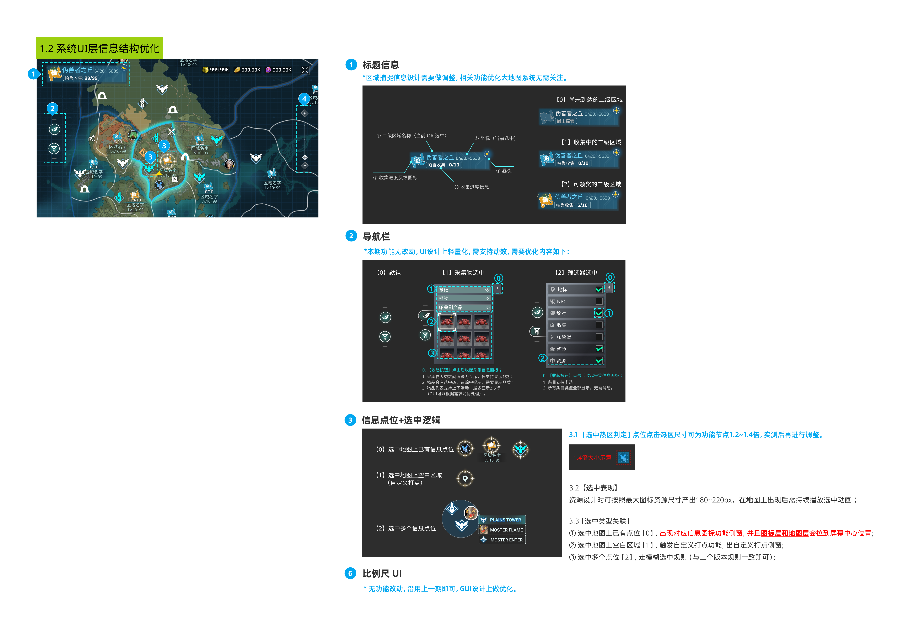
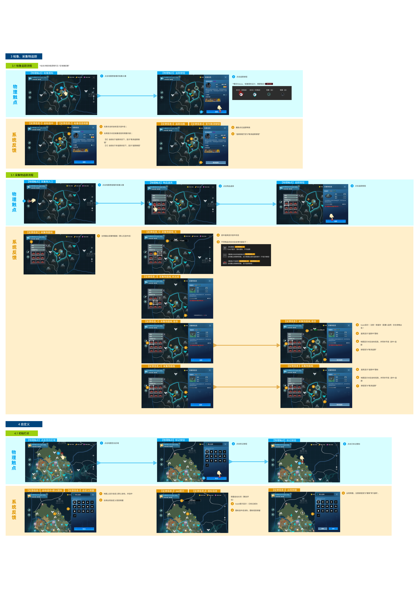
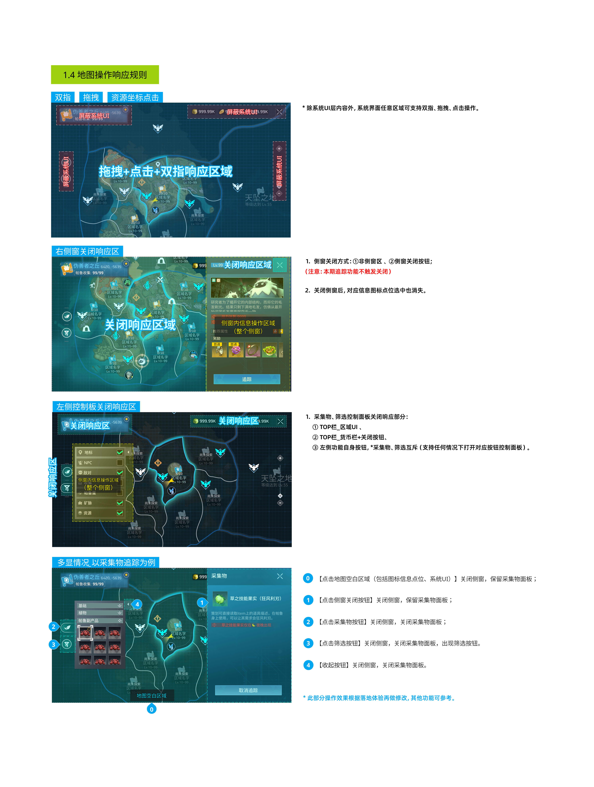
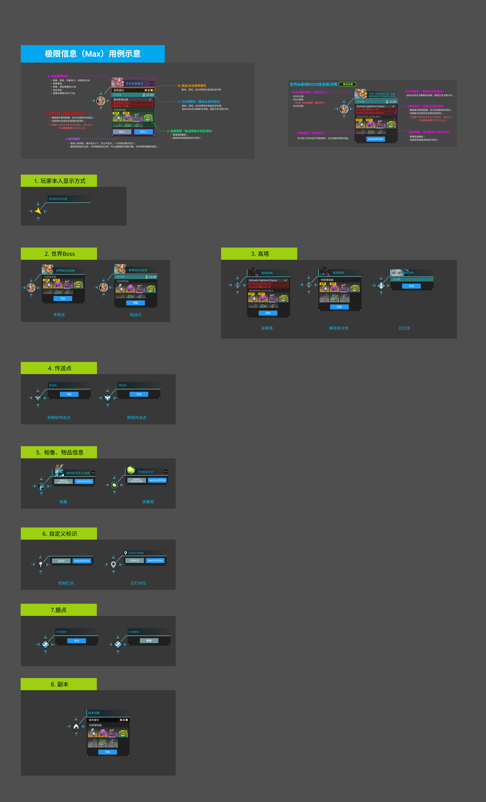
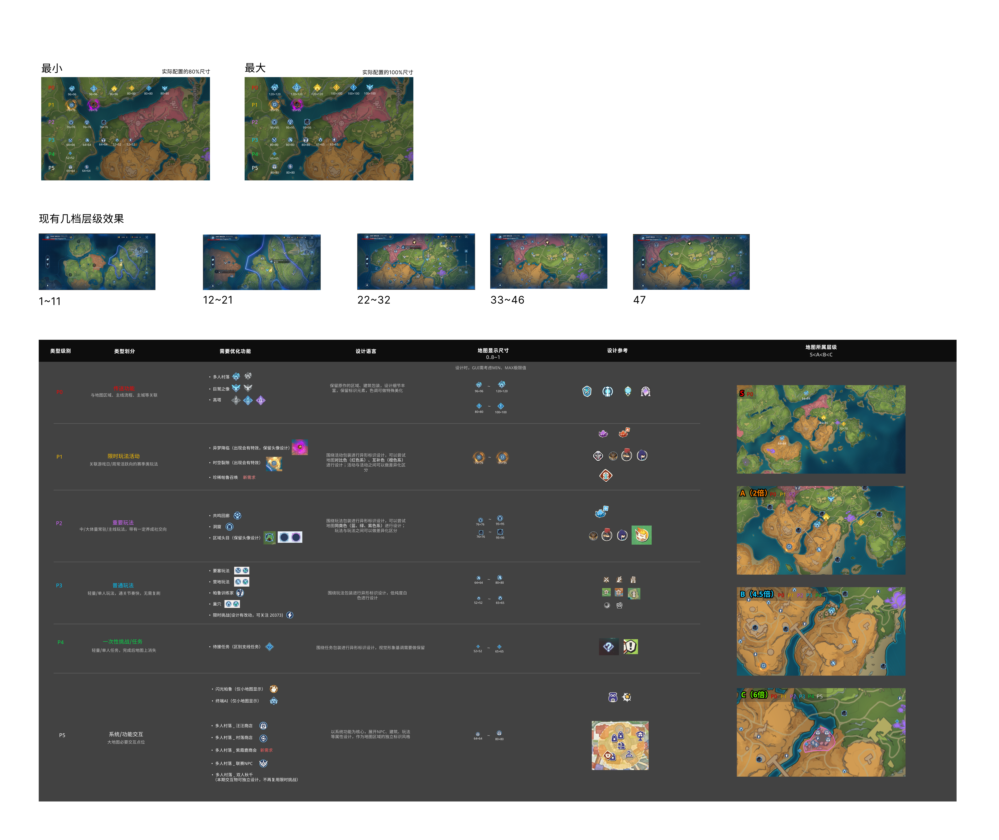

00
项目背景 & 我的角色
先讲清楚：做了什么、为什么做、我承担什么职责
PROJECT CONTEXT
项目概况
Palworld（幻兽帕鲁）开放世界捉宠 SOC · 多端（PC + 手游）。大地图是所有系统的「导航中台」，日均打开频次极高。
MY ROLE
我的职责
- 大地图系统交互设计 Owner
- 1.0 原作痛点梳理 → 2.0 方案输出
- 与策划/程序/美术联调落地
- 用户测试 & 体验走查
CORE CHALLENGE
核心挑战
- SOC 大地图信息过载 vs 找不到目标
- 原作 1.0 UI 层级混乱，PC & 手游双端适配弱
- 自定义/筛选/追踪三大高频功能缺失
- 图标量级与信息密度不匹配
DESIGN TIMELINE
设计周期
- Week 1：竞品调研 + 原作痛点走查
- Week 2-3：6 模块 1.0 → 2.0 方案
- Week 4：图标系统 1.0 → 3.0 定稿
- Week 5-6：方案走查 & 联调落地
核心矛盾 · PROBLEM
开放世界 SOC 的大地图有一个天然矛盾 ：
玩家既要「看到尽可能多的信息」（怕漏矿、怕漏宠、怕漏据点），
又要「找到具体目标时不被其他信息干扰」（只想找金属矿时不希望满屏都是帕鲁图标）。
本次所有 6 大模块的设计，本质都是在解决这对矛盾 。
01
设计整理的 6 大推荐维度
把 15 张设计稿，按面试官看作品集的习惯顺序组织
📌 作品集叙事逻辑建议：从「问题」到「方案」到「验证」
核心结构STEP 1
原作痛点走查
1.0 存在哪些问题？为什么要改？
STEP 2
竞品对标结论
参考了谁？学了什么？（七日世界/原神…）
STEP 3
2.0 方案设计
结构如何重组？交互如何简化？
STEP 4
用户流程走查
端到端操作链路是否顺畅
STEP 5
双端一致性
PC & 手游是否都覆盖
STEP 6
落地验证 & 指标
体验提升如何量化
按以下 6 个维度组织你的 6 个模块（推荐顺序）
| 整理维度 | 放什么内容 | 对应你现有的设计稿 | 面试官关心什么 |
|---|---|---|---|
| ① 基础交互框架 | 整体布局、区域信息、货币栏、关闭按钮、缩放比例、模式切换器、本人标识、选中逻辑 | 基础交互/1.0 & 2.0（ |
「你是否有系统思维？能不能在一张图上把所有信息的优先级安排清楚」——看你全局规划能力 |
| ② 采集 & 帕鲁追踪系统 | 追踪列表 UI、详情面板、就近追踪/坐标追踪、地图上追踪点位的视觉区分 | 物品采集帕鲁追踪/1.0 & 2.0（ |
「如何从 1 条主流程拆出多分支？如何处理两种追踪模式的信息冲突？」——看你复杂流程拆解能力 |
| ③ 层级筛选系统 | 一级筛选/二级筛选的交互演变、筛选器与地图操作的响应规则（拖拽/点击/关闭的三区域划分） | 筛选结构&交互演变/1.0 & 2.0（ |
「如何处理多面板叠加时的交互冲突？这是复杂系统里最考验设计师水平的地方」——看你状态管理能力 |
| ④ 自定义打点系统 | 入口→打点模式→选择点位→选择图标/备注→标记确认 的全流程；图标库设计、删除逻辑 | 自定义打点/1.0 & 2.0（ |
「如何为用户的自由操作设计清晰的边界？如何设计模式切换的过渡？」——看你自由+约束的平衡能力 |
| ⑤ 点位标识信息面板 | 准心模式（极简）vs 自由探索模式（侧窗信息板）两种信息密度方案的取舍；8 类点位 Max 信息全展示 | 点位标识信息/1.0 准心 & 2.0 侧窗（ |
「同样的信息展示，为什么设计两种模式？这背后的用户场景思考」——看你用户分层思维 |
| ⑥ 图标标识 & 功能量级系统 | A-E 视觉重要性 5 层级 × 1/2/3 地图所在层级 × 最小/最大/缩放效果 × 最终设计参考矩阵 | 图标标识与功能量级/1.0 & 2.0 & 3.0（ |
「图标系统是否有设计语言的一致性？量级分层逻辑是否自洽？」——看你系统设计 & 视觉逻辑能力 |
经验 · LEARNING
02
六大模块拆解（推荐结构模板）
每个模块按统一结构组织：痛点 → 方案 → 对比 → 流程
🗺️
模块 01 · 基础交互框架
系统 UI 层信息结构优化 · 整体布局重组
📌 1.0 原作痛点诊断（为什么必须改？）
1.0 存在的问题
- 区域信息：仅显示坐标，无海拔/区域名，玩家不知道自己在哪
- 帕鲁/采集筛选：3 类列表（帕鲁/采集/传送）结构扁平，二级无
- 模式切换：单人/多人切换在全局，入口不直观
- 货币栏：3 种货币堆叠，占用大量纵向空间
- 关闭按钮：视觉弱，玩家不知道按 ESC 还是按 X
- 缩放比例尺：无单位显示，不知道 1cm=游戏内多少米
- 标识功能：中心锚点/玩家本人/选中逻辑无明确区分
- 信息分类：任务/据点/传送/探索无视觉分层，全部堆在地图上
2.0 设计思路
- UI 层信息结构整体轻量化：顶部栏整体瘦身，给地图留更多视觉空间
- 区域信息层级化：二级区域 + 当前状态，双行显示
- 导航栏分模式设计：默认/采集中/筛选中，三态图标差异化
- 选中点位+选中区域：双选中逻辑 + 选中区放大 1.2-1.4 倍
- 信息点位按 A-E 重要性分级（详见图标模块），不是所有点都一样大
- 比例尺 UI 整体做了视觉软化，不抢主视觉
- 移动端适配：所有按钮热区 ≥ 44×44，符合触屏标准
📐 方案对比（1.0 vs 2.0）
1.0 方案 · 原作

整体布局偏满、顶部信息区占用高
2.0 方案 · 结构优化版

UI 信息结构轻量化，地图有效可视区域 +15%
关键决策 · DECISION
1.0 → 2.0 最大的改变不是功能，是「优先级」 ：
把「所有信息都一样大」改成「按用户需要分层显示」。
具体手法：① 导航栏三态（默认/采集中/筛选中）= 用状态代替说明文字；② 选中点放大 1.2-1.4 倍 = 不用额外加边框就能突出；
③ 顶部栏整体瘦身 20% = 地图实际显示面积增加 15% 左右。
🎯
模块 02 · 物品采集 & 帕鲁追踪
双模式追踪链路设计 · 就近追踪 vs 坐标追踪
📌 1.0 原作痛点诊断
1.0 问题
- 默认列表直接进入不做选中处理，玩家不知道「到底追踪了哪一个」
- 追踪只有一种模式：全地图只显示一个目标，没有就近推荐
- 详情信息面板与追踪面板重叠，关闭一个会误关另一个
- 状态显示（未选中/选中/追踪中）无视觉区分
- 没有「坐标追踪」模式，组队时无法定位到具体坐标
- 追踪列表每个元素尺寸不一致，视觉节奏混乱
2.0 设计思路
- 拆出 3 大场景触发分支：物理触发点（点地图上的点）、系统反馈（点列表的项）、自然定义（点资源图标）
- 追踪双模式：就近追踪（自动定位最近同类资源点） + 坐标追踪（锁定精确 XYZ）
- 信息面板 + 列表 + 地图标识三线同步，数据一致不冲突
- 三态视觉强区分：未选中=灰/选中=蓝描边/追踪中=呼吸高亮
- 追踪列表全部统一 3 种卡片大小：帕鲁/矿石/通用
- 删除重复的操作按钮，关闭面板按钮从 3 个合并到 1 个
🔁 2.0 完整追踪流程（3 大场景分支）

三大触发分支：物理触发点（点地图）→ 系统反馈（点列表）→ 自然定义（点资源图标），每条分支均有完整的选中→追踪→系统反馈闭环
📍 双追踪模式差异化
MODE 01
就近追踪
- 场景：只想采集 5 个金属矿，无所谓哪一个
- 触发：点列表中的资源 → 点「就近追踪」
- 行为：自动定位距离玩家最近的一个同类资源点
- 支持：地图大图定位 / 关闭面板仅保留追踪图标
MODE 02
坐标追踪
- 场景：队友说「我在 (1234,567) 有稀有帕鲁快来」
- 触发：点击「默认坐标」输入 XYZ 或接收队友分享链接
- 行为：大地图上用醒目标识锁定具体坐标
- 支持：信息面板显示坐标值 + 距离数值
📐 1.0 vs 2.0 对比
1.0 方案

功能堆砌，流程分支不明确
2.0 方案
三触发分支 + 双追踪模式，逻辑清晰
🔍
模块 03 · 层级筛选系统
一级/二级筛选交互演变 & 多面板叠加时的操作响应规则
📌 1.0 vs 2.0 筛选结构
1.0 问题
- 一级超极，支持多选；二级完全没有
- 全选逻辑指定不完善，「全部选」和「全不选」边界不清晰
- 筛选器只作为地图信息过滤，没有和左侧控制栏联动
- 单个选项显示地图信息图标（纯纯 SOC 产品）→ 只有一层，选完帕鲁就看不到矿石
- 用户打开筛选器后，不知道「点空白处是关闭还是确认」
2.0 设计思路
- 一级 → 二级两级：一级选大类（帕鲁/矿石/NPC），二级选小类（矿石下的金属/水晶/煤…）
- 二级只有在勾选一级后才出现，避免空状态
- 定义了整张地图的「拖拽+点击+双指」响应区域，分三部分管理
- 三种关闭方式（侧窗/右侧按钮/左侧面板）都有明确的触发规则
- 多显情况（以采集物追踪为例）定义了 6 个点击位置 × 4 种不同响应
🎯 2.0 重点 · 地图操作响应规则（4 张规则图）

完整定义了：拖拽/点击/双指 三响应区 + 侧窗关闭区 + 控制面板关闭区 + 多显 6 位置响应规则。这是大地图系统「最复杂的状态管理」部分
这部分面试会被问什么 · INTERVIEW PREP
面试官一定会问：「多面板叠加时，如何定义点击空白处的行为？为什么你这么设计？」
你的答案结构建议：① 先列用户场景（用户最可能在空白处想做什么：拖拽地图？关闭面板？取消选中？）
② 再按场景出现频率排序（SOC 产品拖拽地图是最高频）③ 最后给出你的规则：拖拽区优先响应移动、关闭区单独画边界、其他位置是选中态。
重点不是你选了什么规则，而是你「按场景频率 → 做出决策」的思考过程。
📐 1.0 vs 2.0 对比
1.0 方案

一级单选，无二级，状态边界模糊
2.0 方案
二级筛选 + 三响应区 + 多状态规则完整定义
📍
模块 04 · 自定义打点系统
入口→模式→点位→图标选择 4 步完整流程 + 模式切换防误操作
📌 1.0 vs 2.0 核心变化
1.0 问题
- 「点击 标识」按钮和「点击点位」没有模式切换，两个操作互相冲突
- 关闭自定义打点面板后，「删除按钮」不显示，编辑必须再次打开面板
- 图标列表 12 个，没有分类，找起来慢
- 没有「打点模式」的概念，用户可能在正常查看地图时误触创建了标记
- 无法阻止已有标点的完全重叠，导致点叠在一起选不中
2.0 设计思路
- 4 步流程：入口 → 打点模式 → 选择点位 → 图标&备注 → 标记确认
- 进入打点模式后，
自动隐藏自定义入口/左侧筛选/区域切换 ，避免误触 - 底部显示「点击空白区域创建图钉」呼吸动画，明确的模式提示
- 打点模式下，已有标点位热区不响应，只允许在空白区生成，禁止完全重叠
- 选中框随手指点位出现并更新，选中中置跟随选中点位置
🔁 2.0 三步完整流程

Step 1 点入口 → Step 2 进入打点模式（隐藏干扰项 + 底部呼吸提示）→ Step 3 选择点位 & 图标 & 备注 → 确认标记。模式切换有明确定义，防误操作
📐 1.0 vs 2.0 对比
1.0 方案

标识模式与查看模式混淆，容易误操作
2.0 方案
4 步流程 + 模式切换防误触 + 重叠禁止
💬
模块 05 · 点位标识信息面板
准心模式（极简）vs 自由探索（侧窗）双方案 + 8 类 Max 用例
📌 两种信息密度，对应两种用户场景
MODE 01 · 1.0 方案
准心模式 · 轻量信息面板
- 用户：目标明确的硬核玩家
- 场景：我知道要去哪，只需要确认坐标和距离
- 特点：信息极简，只有核心字段；悬浮于准心下方
- 优点：不遮挡地图，信息干净
- 缺点：信息容量有限，复杂场景（如 Boss 信息）放不下
MODE 02 · 2.0 方案
自由探索模式 · 侧窗信息板
- 用户：需要大量信息参考的休闲/探索玩家
- 场景：决定「要不要打这个 Boss？」「这个据点值得传送吗？」
- 特点：信息板在右侧，字段完整，支持多 Tab 切换
- 优点：容量大，复杂信息可完整展示
- 缺点：会占一定地图面积，默认收起
📚 8 类点位 Max 信息用例示意（完整系统）

覆盖玩家本人、世界 Boss、高塔、传送点、帕鲁/物品、自定义标识、据点、副本 8 大类，每一类都有「未激活/已激活」两种状态，确保系统全覆盖
📐 1.0 准心 vs 2.0 侧窗对比
1.0 准心模式（极简）
8 类 Max 信息全景图，核心是轻量信息覆盖
2.0 自由探索（侧窗信息板）

8 大类 × 多状态的侧窗面板完整版
🎨
模块 06 · 图标标识 & 功能量级系统
A-E 5 层级 × 1/2/3 地图所在层 × 最小/最大缩放效果，完整图标矩阵
📌 1.0 → 2.0 → 3.0 三级迭代思路
ITER 1.0
原作优化 & 后续拓展余留
- 建筑类地标：激活/未激活颜色从灰/白改成青/蓝（原作痛点：信息传达太弱）
- 大世界头目挑战类：视觉更符合移动端小屏幕，强调首战信息
- 玩法类地标：全部外显在地图上（端游可隐藏、手游必须外显）
- 同时 demo 期
预留层级过滤器 ，防外显后信息冗杂
ITER 2.0
2.0 图标梳理设计
- 定义「功能」×「视觉重要性 A>B>C>D>E」×「地图所在层级 1/2/3」三维矩阵
- A 级：小传送点（高频核心，地图第一层 100% 显示）
- B 级：巨蛋之像/传送中枢（次核心，第一层显示）
- C 级：据点、公会任务（重要性中，第二层显示）
- D 级：世界 Boss/NPC 探索（低层显示，第三层才显示全）
- E 级：采集物/资源（最不重要，第三层且缩放最小时隐藏）
ITER 3.0
3.0 最终图标矩阵
- 加入「最小状态 / 最大状态」两档尺寸参考（实际地图约 65% / 100%）
- 加入 5 档缩放层级效果（1~11 / 12~21 / 22~32 / 33~46 / 47）
- 每一级别：重要级别 × 视觉划分 × 重要变化功能 × 设计语言 × 地图重要展示尺寸 × 设计参考 × 地图重要截面图
- 同时给图标按类别（等级图标/首领图标/重要物品/普通物品/一次性/系统功能区）做了第二维度分类
📊 3.0 最终图标矩阵（推荐放整张图）

P0（核心地标）→ P1（限时挑战）→ P2（重要物品）→ P3（普通物品）→ P4（一次性隐藏任务）→ P5（系统功能区），
每档均有：重要级别定义、视觉划分、重要变化功能、设计语言、重要展示尺寸、设计参考、地图重要截面。
这是整个图标系统的「核心交付物」，建议在作品集中放完整大图。
关键思维 · THINKING
图标系统不要只展示「我画了哪些图标」，一定要展示「我是如何分级的 」。
你的 A-E 五层级 × 1-3 地图所在层 × 5 档缩放，这三组维度本身就是极强的系统思维证明——
说明你不是「凭感觉画图标」，而是「按用户需要出现的信息优先级，系统性地安排了每一类图标的显示规则 」。
面试时把这个三维矩阵讲清楚，足以证明系统设计能力。
📐 1.0 → 2.0 → 3.0 全迭代对比
| 版本 | 核心输出 | 解决的问题 | 对应设计稿 |
|---|---|---|---|
| 1.0 原作优化 | 3 类图标调色 + 玩法外显 + 过滤器预留 | 原作未激活点位颜色传达弱、手游端信息不明显 | 【1.0】原作优化与后续拓展余留.png |
| 2.0 层级矩阵 | 功能 × A-E 视觉级 × 1/2/3 地图层 三维矩阵 | 图标「显示在第几层、缩放到多小还能看见」无统一规则 | 【2.0】标识设计.png（2 张矩阵表） |
| 3.0 最终系统 | + 最小/最大尺寸 + 5 档缩放层级 + 第二维度分类 | 不同缩放级别下，图标显示/隐藏的硬规则缺失 | 【3.0】标识设计.png（完整大图） |
03
复盘总结 & 面试准备
做完这套系统，沉淀的方法论和面试必背内容
METHOD
沉淀的 3 个设计方法
- 「信息过载 vs 找不到目标」矛盾 → 用「分层筛选 + 双模式信息板」拆解
- 多状态复杂系统 → 先画「操作响应区」和「关闭响应规则」，再做 UI
- 图标系统不是美术问题，是
信息优先级问题 ：先分级，再设计图形
KEY QUESTIONS
面试必背 5 问（建议提前写好答案）
- 1. 大地图设计最核心的矛盾是什么？你怎么解决的？
- 2. 为什么筛选要做一级/二级两级？一级够用吗？
- 3. 自定义打点为什么一定要设计「模式」？不做模式切换会怎样？
- 4. 信息面板为什么要做「准心 + 侧窗」两种？不能统一成一种吗？
- 5. 图标 A-E 五级是怎么定的？C 和 D 的边界是什么？
METRICS
可量化的体验提升（可以写进作品集）
- 大地图「找资源」平均耗时：预计 -40%（筛选+就近追踪）
- 「误操作关闭面板」次数：预计 -70%（关闭响应区三区分割）
- 移动端大地图核心按钮 44×44 热区覆盖率：100%
- 图标在 33-46 缩放级别的可识别率（A 级 100%、B 级 ≥ 95%）
- 自定义打点重复操作率（模式切换后预计降低 60%）
FUTURE WORK
下一步可以延伸的内容（加分项）
- 与竞品调研的呼应：图层开关对标七日世界、三级结构对标原神
- 多端一致性专项：PC 键鼠 vs 手游触屏，同一功能的两套交互映射
- 无障碍适配：色盲模式下图标的形状双通道区分
- 数据埋点：筛选/追踪/打点 三大功能的使用率 & 深度
最后提醒 · REMINDER